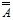

электронный
ресурс по учебной дисциплине
1-40 02 01 «Вычислительные машины, системы и сети»
|
||
| Оглавление | Программа | Теория | Практика | Контроль знаний | Об авторах | ||
Г л а в а 1
Основные понятия теории множеств
1.1. Определения
Под множеством обычно понимается совокупность или набор каких-то объектов, имеющих что-то общее, и при этом каждый из них чем-то отличается от другого. Например, множество людей, присутствующих на каком-то мероприятии, множество домов некоторого района города и т. п. Понятие множества является одним из основных понятий математики. Таким же является понятие элемента множества. Это исходные понятия, и поэтому точного определения для них нет. Принадлежность элемента а множеству М обозначается как а ∈ М. Если же некоторый элемент а не принадлежит множеству М, то это обозначается как а ∉ М или а¬∈ М.
Любое множество может быть элементом другого множества, которое также может быть элементом некоторого множества, и т. д. (множество множеств, множество множеств множеств и т. д.). Иногда для большего благозвучия вместо словосочетания «множество множеств» употребляют «совокупность множеств» или «семейство множеств».
Множество А является подмножеством множества В, если всякий элемент из А принадлежит множеству В. Этот факт обозначается А ⊆ В (⊆ − знак включения). При этом говорят, что множество В содержит, или покрывает, множество А. Множества А и В равны (А = В), если А ⊆ В и В ⊆ А. Множество, не имеющее ни одного элемента, называется пустым и обозначается ∅. Оно является подмножеством любого множества, т. е. ∅ ⊆ М для любого М. Пустое множество, а также само М являются несобственными подмножествами множества М.
Если А ⊆ В и А ≠ В для некоторого непустого множества А, то А является собственным подмножеством множества В, и это обозначается как А ⊂ В (⊂ − знак строгого включения).
Не следует путать знаки ⊂ и ∈, когда рассматриваются множества множеств. Например, зрительный зал можно рассматривать как множество рядов М, каждый из которых, Мi, представляется как множество кресел. Тогда Мi ∈ М и для отдельного кресла тj можно записать тj ∈ Мi. Тот же зрительный зал можно представить как множество М′ всех находящихся в нем кресел. Тогда для того же Мi имеет место Мi ⊂ М′.
Множество всех подмножеств некоторого множества М называется булеаном. Булеан обозначается символом 2М. Среди его элементов находятся само множество М, а также пустое множество ∅.
Множества бывают конечными (содержащими конечное число элементов) и бесконечными. Параметром, характеризующим размер множества, является мощность множества. Для конечного множества М мощностью является число элементов, которое обозначается символом |М|. Мощность бесконечного множества – более сложное понятие. Оно выражается через соответствие.
Мощность булеана множества М равна 2|М|. Действительно, 2∅ = {∅}, т. е. число элементов булеана пустого множества есть 20 = 1, а добавление к М одного нового элемента каждый раз увеличивает мощность его булеана вдвое (прежние элементы булеана при этом сохраняются, а новые получаются из прежних добавлением к ним данного нового элемента).
Если множества А и В равномощны, т. е. |А| = |В|, то между ними можно установить взаимно однозначное соответствие. Каждому элементу из А ставится в соответствие элемент из В, и наоборот. Для бесконечных множеств отношение равномощности устанавливается путем нахождения взаимно однозначного соответствия между их элементами.
Примерами бесконечных множеств служат: N = {1, 2, … } – множество натуральных чисел, Z = { … , – 2, – 1, 0, 1, 2, … } – множество целых чисел, R – множество действительных чисел (рациональные и иррациональные числа).
Множества, равномощные с множеством N, называются счетными. Для того чтобы выяснить, является ли некоторое множество М счетным, надо найти способ установить взаимно однозначное соответствие между М и N, т. е. пронумеровать элементы множества М.
У т в е р ж д е н и е 1.1. Любое бесконечное подмножество N множества N счетно.
Действительно, пусть N ⊂ N. Выберем в N наименьший элемент и обозначим его п1. Удалим из N элемент п1 и из оставшихся элементов выберем снова наименьший, который обозначим п2, и т. д. Таким образом, можно себе представить, что все элементы бесконечного множества N окажутся пронумерованными.
У т в е р ж д е н и е 1.2. Множество P положительных рациональных чисел счетно.
Любое рациональное
число можно представить в виде правильной
или неправильной дроби , где
а и b – натуральные числа.
Образуем внутри множества P классы Р1 = {}, Р2 = {,}, Р3 = {,,}, … . Здесь в i-м классе (i = 1, 2, …) собраны все , для
которых a + b = i + 1.
Выстроим последовательность из дробей,
принадлежащих классам Pi,
сохраняя порядок нумерации этих классов.
Дроби, принадлежащие одному и тому же
классу, упорядочиваются по возрастанию
числителя а. В
полученной последовательности любая дробь
 снабжается номером
1 + 2 + … + (i – 1) + a.
Следовательно, множество P счетно.
снабжается номером
1 + 2 + … + (i – 1) + a.
Следовательно, множество P счетно.
Примером несчетного множества является множество всех действительных чисел отрезка [0, 1]. Такое множество имеет название континуум. Булеан бесконечного счетного множества также не является счетным множеством.
1.2. Способы задания множеств
Перечисление элементов. Это простейший способ задания конечного множества. Например, если множество А состоит из элементов а1, а2, … , ап, то можно записать А = {а1, а2, … , ап}.
Указание свойств элементов. При таком способе задается одно или несколько свойств, по которым определяется принадлежность элементов к данному множеству. Если Р(х) означает, что х обладает свойством Р, то А = {х / Р(х)} есть множество всех тех и только тех элементов, которые обладают свойством Р. Например, М = {х / х = 2k, k ∈ N} – множество всех чисел, каждое из которых представляет собой число 2 в натуральной степени.
Индуктивный способ. Задается некоторая порождающая процедура, которая определяет способ получения элементов множества из уже полученных элементов. Например, для бесконечного множества М = {1, 2, 4, 8, 16, …} такой определяющей процедурой является следующая: 1) 1 ∈ М; 2) если т ∈ М, то 2т ∈ М.
Алгебраический способ. При этом способе дается формула, по которой можно получить множество из других множеств с помощью алгебраических операций над ними.
Визуальное представление множеств. Множества изображаются на плоскости в виде фигур, называемых диаграммами Эйлера –Венна. Этот способ используется обычно для наглядной демонстрации операций над множествами или отношений между множествами. Пример использования данного способа будет приведен при описании операций над множествами.
Булевы векторы. При рассмотрении конечных множеств вводится универсальное множество (универсум), обозначаемое обычно U, и всякое множество, подлежащее рассмотрению, считается подмножеством множества U. Тогда любое множество М представляется вектором с |U| компонентами, которые соответствуют элементам множества U. Компонента этого вектора равна 1, если соответствующий элемент принадлежит множеству М, и 0 – в противном случае. Пусть U = {a, b, c, d, e} и М = {a, b, d}. Тогда М представится вектором 11010. Векторы 00000 и 11111 задают соответственно пустое множество ∅ и универсальное множество U.
1.3. Операции над множествами
Как было сказано выше, множество можно представить в виде результата операций над другими множествами.
Объединение множеств А и В представляет собой множество, содержащее те и только те элементы, которые принадлежат А или В (хотя бы одному из этих множеств):
А ∪ В = {x / x ∈ A или x ∈ В}.
Пересечением множеств А и В является множество, содержащее те и только те элементы, каждый из которых принадлежит как А, так и В:
А ∩ В = {x / x ∈ A и x ∈ В}.
Разность множеств А и В состоит из элементов множества А, которые не принадлежат множеству В:
А \ В = {x / x ∈ A и x ∉ В}.
Сумма множеств А и В (ее называют еще симметрической разностью множеств А и В) содержит все элементы из А, не принадлежащие В, и все элементы из В, не принадлежащие А:
А + В = {x / (x ∈ A и x ∉ В) или (x ∈ В и x ∉ А)}.
Дополнение множества А состоит из элементов универсального множества U, не принадлежащих А:
¬А = {x / x ∈ U и x ∉ А}.
На рис. 1.1 затемненными областями на диаграммах Эйлера –Венна показаны результаты перечисленных операций.
Таким образом, формула, в которой присутствуют символы операций над множествами, есть способ задания множества. Две формулы равносильны, если они представляют одно и то же множество. Некоторые операции можно выразить через другие. Так, например, имеем
А + В = (А ∩¬В) ∪ (¬А ∩ В) = (А ∪ В) \ (А ∩ В);
¬А = U \ А;
A \ B = A ∩¬B.
Три из перечисленных операций, дополнение, пересечение и объединение, составляют булеву алгебру множеств. Перечислим основные законы этой алгебры, используя общепринятое правило: если в формуле отсутствуют скобки, устанавливающие порядок выполнения операций, то сначала выполняется дополнение, потом пересечение и затем объединение. Для повышения компактности формулы знак пересечения множеств, подобно знаку арифметического умножения, будем опускать.
А ∪ В |
А ∩ В |
А \ В |
|
А + В |
¬А |
||
Коммутативность:
А ∪ В = В ∪ А; А В = В А.
Ассоциативность:
А ∪ (В ∪ С) = (А ∪ В) ∪ С; А (В С) = (А В) С.
Дистрибутивность:
А (В ∪ С) = А В ∪ А С; А ∪ В С = (А ∪ В) (А ∪ С).
Идемпотентность:
А ∪ А = А; А А = А.
Законы де Моргана:
 =¬А¬В;
=¬А ∪¬В.
=¬А¬В;
=¬А ∪¬В.
Законы операций с константами (пустым и универсальным множествами):
А ∪ ∅ = А; А U = А;
А ∪ U = U; А ∅ = ∅;
А ∪¬А = U; А¬А = ∅.
Закон двойного дополнения:
= А.
Любое равенство из булевой алгебры множеств можно вывести путем равносильных преобразований, используя формулы из приведенного списка.
Например, известная как закон поглощения формула А ∪ А В = А, которой нет в приведенном списке, выводится следующим образом:
А ∪ А В = А U ∪ А В = А (U ∪ В) = А U = А.
Используя принцип двойственности, получим
А (А ∪ В) = А.
Список формул, приведенный выше, является достаточным, но для вывода любого равенства из данной алгебры можно воспользоваться меньшим списком, т. е. некоторые формулы этого списка можно вывести из других. Например, формулу
А ∪ В С = (А ∪ В) (А ∪ С)
(дистрибутивность объединения относительно пересечения) можно получить следующим образом. Ее правую часть, используя дистрибутивность пересечения, представим как
(А ∪ В) А ∪ (А ∪ В) С.
Раскрыв скобки (по закону ассоциативности), получим
А А ∪ В А ∪ А С ∪ В С.
Применим закон идемпотентности и используем константу U (А А = А = А U), в результате чего после применения закона коммутативности пересечения правая часть примет вид А U ∪ А В ∪ А С ∪ В С. После вынесения за скобки А получим А (U ∪ В ∪ С) ∪ В С, что равно левой части исходного выражения согласно свойству константы U.
Выведем теперь закон простого склеивания А В ∪¬А В = В:
А В ∪¬А В = В (А ∪¬А) = В U = В.
Формулу А В ∪¬А С = А В ∪¬А С ∪ В С (обобщенное склеивание) выведем следующим образом:
А В ∪¬А С ∪ В С = А В ∪¬А С ∪ В С (А ∪¬А) =
= А В (U ∪С) ∪¬А С (U ∪В) = А В ∪¬А С.
Используя только что выведенную формулу и закон поглощения, докажем А ∪¬А В = А ∪ В:
А ∪¬А В = А U ∪¬А В = А U ∪¬А В ∪ U В =
= А ∪¬А В ∪ В = А ∪ В.
Г л а в а 2
Отношения бинарные и n-арные
2.1. Декартово произведение
Декартовым, или прямым, произведением двух множеств А и В (обозначается А × В) называется множество всех таких упорядоченных пар (a, b), что a ∈ A и b ∈ В. Пусть, например, А = {a, b, c} и B = {l, m}. Тогда А × В = {(a, l), (b, l), (c, l), (a, m), (b, m), (c, m)}. Это понятие распространяется на случай с более чем одним сомножителем. Декартово произведение множеств А1, А2, … , Ап (обозначается А1 × А2 × … × Ап) есть множество всех векторов (а1, а2, … , ап) размерности п, таких, что a1 ∈ A1, a2 ∈ А2, … , aп ∈ Ап.
Декартово произведение п одинаковых сомножителей А × А × … × А обозначается символом Ап и называется п-й степенью множества А. При этом А1 = А. Примером декартова произведения является R × R = R2 – множество точек на плоскости. Здесь элементы х ∈ R и у ∈ R служат координатами некоторой точки на плоскости. Другим примером является множество R3 точек в трехмерном евклидовом пространстве. Обобщением этих понятий является п‑мерное пространство.
Любое подмножество R ⊆ А1 × А2 × … × Ап декартова произведения п множеств называется п-арным отношением. При п = 1, 2, 3 имеем унарное, бинарное, тернарное отношения соответственно. Унарное отношение на множестве А представляет собой подмножество множества А.
2.2. Бинарные отношения (соответствия)
Бинарным отношением, или соответствием между элементами множеств А и В, называется любое подмножество R ⊆ А × В декартова произведения этих множеств. Тот факт, что некоторые a ∈ A и b ∈ В находятся в отношении R, иногда выражают как a R b. В качестве примера бинарного отношения рассмотрим отношение R между элементами множеств А = {1, 2, 3} и B = {1, 2, 3, 4, 5, 6}, которое можно выразить словами так: элемент х ∈ A есть делитель элемента у ∈ В. Тогда имеем R = {(1, 1), (1, 2), (1, 3), (1, 4), (1, 5), (1, 6), (2, 2), (2, 4), (2, 6), (3, 3), (3, 6)}.
Бинарное отношение удобно представлять в виде двоичной (булевой) матрицы. При этом элементы множеств А и В должны быть пронумерованы, и если i-й элемент множества А соответствует j-му элементу множества В, то элемент матрицы, расположенный на пересечении i-й строки и j-го столбца, имеет значение 1, в противном случае он имеет значение 0. Например, рассмотренное выше отношение R будет представлено следующей матрицей:
.
Проекция элемента (a, b) множества А × В на множество А есть элемент а. Аналогично элемент b является проекцией элемента (a, b) множества А × В на множество В.
Проекцией множества Е ⊂ А × В на А называется множество всех тех элементов из А, которые являются проекциями элементов из Е на множество А. Для множеств А и В, рассмотренных выше, проекцией элемента (2, 4) на множество А является элемент 2, а проекцией множества {(1, 2), (2, 2), (2, 4)} – множество {1, 2}.
Сечением множества R ⊂ А × В по а, обозначаемым R(а), называется множество всех тех элементов у ∈ В, для которых (a, у)∈ R.
Сечением R(Х) множества R по Х ⊂ А является объединение сечений для всех элементов из Х. Пусть R = {(1, 1), (1, 3) (1, 5), (1, 6), (2, 2), (2, 4), (3, 3), (3, 6)}. Тогда R(2) = {2, 4}, а если Х = {2, 3}, то R(Х) = {2, 3, 4, 6}.
Бинарное отношение можно задавать с помощью сечений. Например, отношение, представленное матрицей
,
можно задать следующим образом: R(a1) = {b1, b3}, R(a2) = {b1, b3, b4}, R(a3) = {b1, b4}, R(a4) = ∅, R(a5) = {b4}. Множество сечений для всех a ∈ A называется фактор-множеством.
Образом множества Х ⊆ А относительно R называется множество {b / b ∈ В, х ∈ Х, (х, b) ∈ R}. Прообразом множества Y ⊆ В относительно R называется множество {a / a ∈ A, y ∈ Y, (a, y) ∈ R}. В нашем последнем примере образом множества {а1, а3} относительно R является {b1, b3, b4}, а прообразом множества {b3, b4} является {а1, а2, а3, а5}.
Обратным отношением R – 1 для некоторого отношения R ⊆ А × В является множество, образованное теми парами (b, а) ∈ В × А, для которых (а, b) ∈ R. Матрица, представляющая отношение R – 1, получается транспонированием матрицы, представляющей R, т. е. заменой строк столбцами и наоборот.
Например, рассмотренному выше отношению R будет соответствовать обратное отношение R − 1 , представляемое матрицей
.
2.3. Операции над бинарными отношениями
Поскольку всякое отношение есть некоторое множество пар, над отношениями применимы все стандартные операции над множествами, т. е. объединение, пересечение, дополнение. Универсальным множеством для операции дополнения при этом является А × В.
Рассмотрим операцию композиции отношений. Заданы множества А, В, С и отношения R ⊆ А × В и S ⊆ В × С. Композиция отношений S и R (обозначается SR, не путать с пересечением множеств S и R!) – это такое отношение между элементами множеств А и С, что для всех а ∈ А сечение множества SR по а совпадает с сечением множества S по подмножеству R(a) ⊆ B. Это записывается в виде (SR)(a) ⊆ S(R(a)). Например, пусть отношения R и S заданы соответственно следующими матрицами:
R = , S = .
Тогда композиция SR этих отношений представится матрицей
SR = .
2.4. Функциональные отношения
Отношение R ⊆ А × В называется функциональным, если для каждого а ∈ А сечение множества R по а содержит не более одного элемента, т.е. для каждого а справедливо |{a / (a, b) ∈ R, b ∈ B}| ≤ 1. В функциональном отношении не существует пар с одинаковым левым элементом и различными правыми элементами, т. е. если (а, b) ∈ R и R – функциональное отношение, то в R не может быть пары вида (а, с), где b ≠ c. Матрица, представляющая функциональное отношение, в каждой строке имеет не более одной единицы. Примером может служить следующая матрица:
.
Если сечение функционального отношения R по любому элементу а из множества А содержит один и только один элемент, то отношение R называется всюду определенным.
Если отношение R – 1, обратное для функционального отношения R, также является функциональным, то отношение R называется взаимно однозначным.
Для всякого функционального отношения R ⊆ А × В можно определить функцию, связанную с этим отношением. Для обозначения функции используется запись f : A → B. Если (х, у) ∈ R, то это можно выразить как у = f(x), где х является аргументом, а у – значением функции f.
Множество {x / (x, y) ∈ R} называется областью определения функции f. Если это множество совпадает с А, то функция f является всюду определенной. Такая функция называется отображением множества А в В. В противном случае функцию называют частичной.
Множество {у / (x, y) ∈ R} называется областью значений функции f. Если область значений функции f совпадает с множеством В, то f называют отображением А на В, сюръективным отображением, или сюръекцией. Обязательным условием существования отображения А на В является |А| ≥ |В|.
Если функциональное отношение R ⊆ А × В, определяющее функцию f, является взаимно однозначным, то функцию f называют инъективным отображением, или инъекцией. В этом случае существует функция f – 1, которая является обратной к функции f. При этом если у = f (x), то х = f – 1(у), а мощность области определения функции f не должна превышать |В|.
Функция f называется биективным отображением, или биекцией, если она является как сюръективным, так и инъективным отображением. Такое отображение называется еще 1-1 соответствием.
Если R – взаимно однозначное отношение между элементами одного и того же множества, т. е. R ⊆ А × А = А2, и, кроме того, R и R – 1 всюду определены, то отображение, связанное с R, называется подстановкой.
На рис. 2.1 изображены схемы рассмотренных видов отображений.
Рис. 2.1. Схемы функциональных отображений: а) сюръекция; б) инъекция;
в) биекция
Функция, определенная на множестве натуральных чисел, называется последовательностью, а каждое ее значение – членом последовательности.
Отображение f произвольного множества в множество действительных чисел называется функционалом. Примером функционала может служить определенный интеграл.
Отображение f : A → B, где А и В – некоторые множества функций, называется оператором. Оператор преобразует одну функцию в другую. Примером оператора является оператор суперпозиции функций, где аргументами некоторых функций служат другие функции. Это понятие будет использовано далее.
2.5. Бинарные отношения на множестве
Пусть R ⊆ А × А. Определим некоторые свойства, которыми может обладать или не обладать такое отношение:
рефлексивность: если a = b, то a R b;
иррефлексивность: если a R b, то a ≠ b;
симметричность: если a R b, то b R a;
антисимметричность: если a R b и b R a, то a = b;
транзитивность: если a R b и b R с, то a R с;
дихотомия: если a ≠ b, то либо a R b, либо b R a.
Следует выделить некоторые типы бинарных отношений, характеризуемые определенным набором свойств.
Отношение эквивалентности рефлексивно, симметрично и транзитивно. Примерами отношения эквивалентности являются равносильность формул, подобие геометрических фигур, принадлежность студентов к одной группе, принадлежность населенных пунктов к одному району и т. п.
Отношение эквивалентности делит множество на непересекающиеся подмножества – классы эквивалентности. С другой стороны, всякое разбиение множества М на непересекающиеся подмножества задает отношение эквивалентности на множестве М: любые два элемента, принадлежащие одному и тому же классу разбиения, эквивалентны, а элементы, принадлежащие различным классам, не являются эквивалентными. Множество всех классов эквивалентности образует фактор-множество множества М по R (обозначается M / R).
Отношение совместимости рефлексивно и симметрично. Примерами отношения совместимости являются близость чисел, знакомство людей и т. п.
Отношение нестрогого порядка рефлексивно, антисимметрично и транзитивно. Отношения ≤ (меньше или равно) и ≥ (больше или равно) для действительных чисел так же, как ⊆ и ⊇ для множеств являются отношениями нестрогого порядка.
Отношение строгого порядка иррефлексивно, антисимметрично и транзитивно. Отношениями строгого порядка являются < (меньше) и > (больше) для действительных чисел, а также ⊂ и ⊃ для множеств.
Множество М, на котором задано отношение порядка R (строгого или нестрогого), может быть полностью упорядоченным, если любые два элемента a и b из М находятся в отношении R, т. е. a R b или b R a. При этом говорят, что a и b сравнимы. Если М содержит хотя бы одну пару элементов с и d, для которых не имеет место ни c R d, ни d R c, то множество М является частично упорядоченным, а указанные элементы с и d несравнимы. Отношение полного порядка обладает свойствами иррефлексивности, антисимметричности и дихотомии. Полный порядок называют еще линейным или совершенным.
Для множества действительных чисел R отношения ≤ и < являются отношениями полного порядка. Для семейства подмножеств некоторого множества М отношение ⊆ является отношением частичного порядка. Например, {a1, a3} ⊆ {a1, a2, a3}, а подмножества {a1, a3} и {a1, a2, a4} несравнимы.
Порядок букв в алфавите и естественный порядок цифр являются полными порядками. На основе порядка букв строится лексикографический порядок слов, используемый в словарях и определяемый следующим образом.
Обозначим это отношение
порядка символом  . Пусть
имеются слова w1 = a11a12 … a1m и w2 = a21a22 … a2n. Тогда w1
. Пусть
имеются слова w1 = a11a12 … a1m и w2 = a21a22 … a2n. Тогда w1 w2, если и только если либо w1 = paiq, w2 = pajr и
аiaj, где
p, q и r – некоторые слова,
возможно, пустые, а аi и aj – буквы, либо w2 = w1p, где
р – непустое
слово.
w2, если и только если либо w1 = paiq, w2 = pajr и
аiaj, где
p, q и r – некоторые слова,
возможно, пустые, а аi и aj – буквы, либо w2 = w1p, где
р – непустое
слово.
Например, учебник ученик и мор
ученик и мор море. В
первом случае р = уче, аi = б, аj = н,
q = ник, r = ик, и в алфавите
буква «н» стоит дальше буквы «б». Потому в
словаре слово «ученик» следует искать
после слова «учебник». Во втором случае
w1 = мор и р = е. Согласно лексикографическому
порядку слово «море» должно быть помещено
в словаре после слова «мор».
море. В
первом случае р = уче, аi = б, аj = н,
q = ник, r = ик, и в алфавите
буква «н» стоит дальше буквы «б». Потому в
словаре слово «ученик» следует искать
после слова «учебник». Во втором случае
w1 = мор и р = е. Согласно лексикографическому
порядку слово «море» должно быть помещено
в словаре после слова «мор».
| (С) БГУИР |